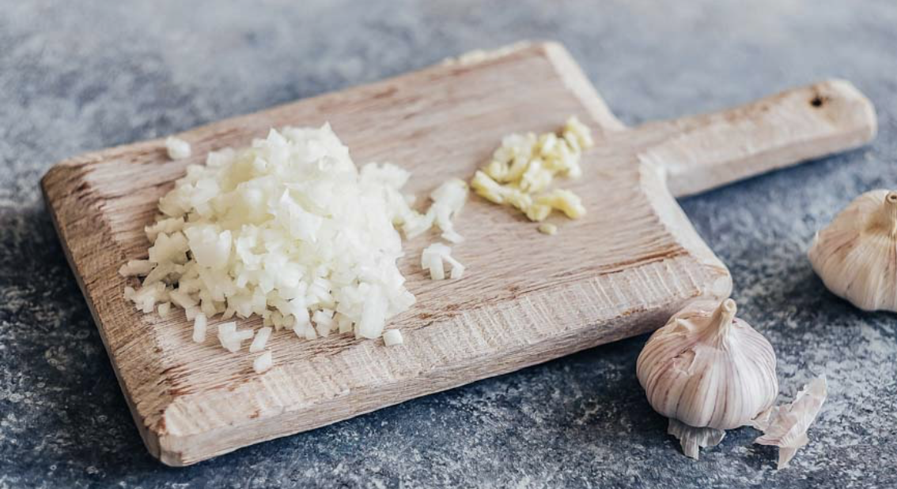
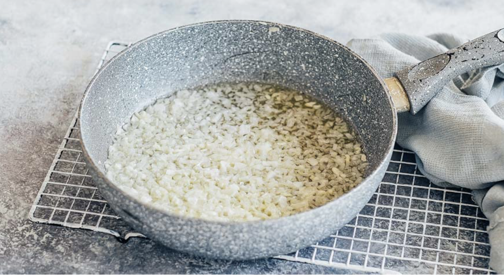
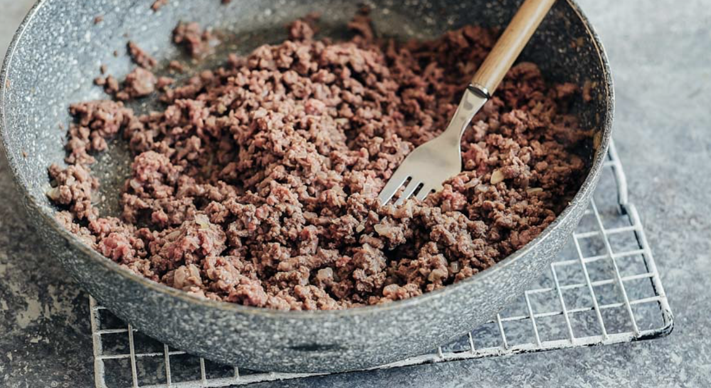
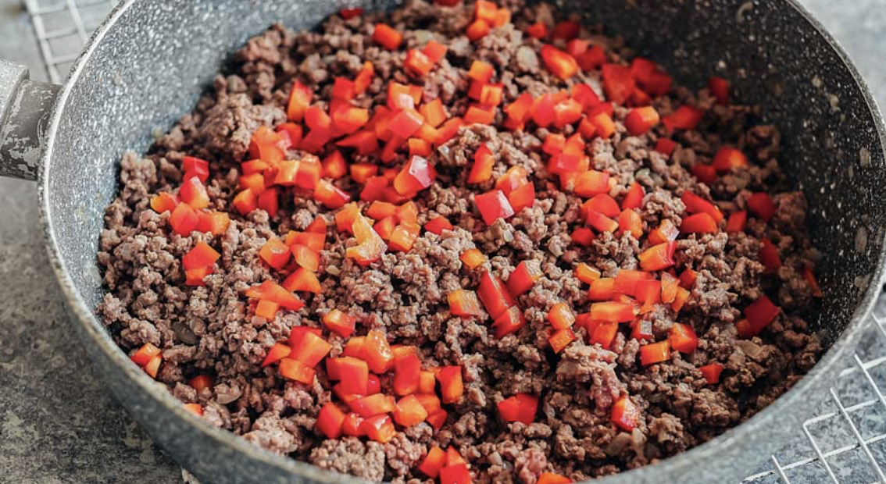
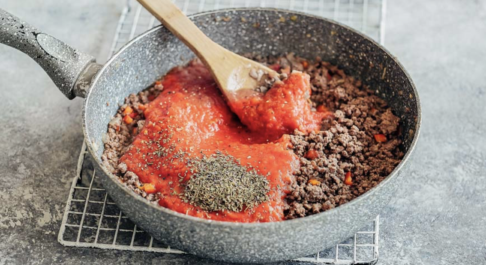
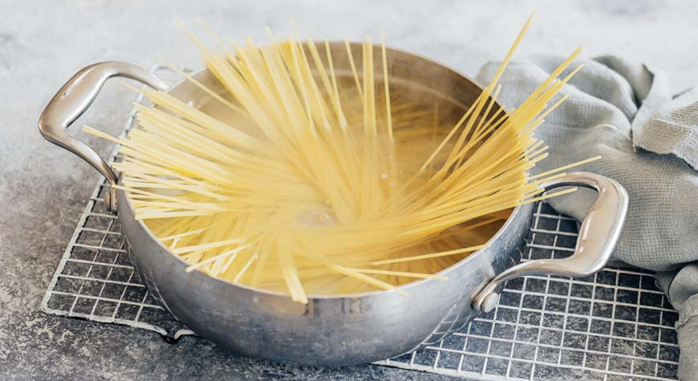
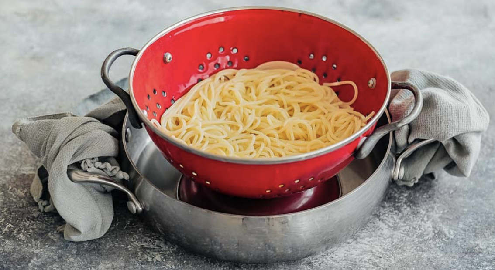
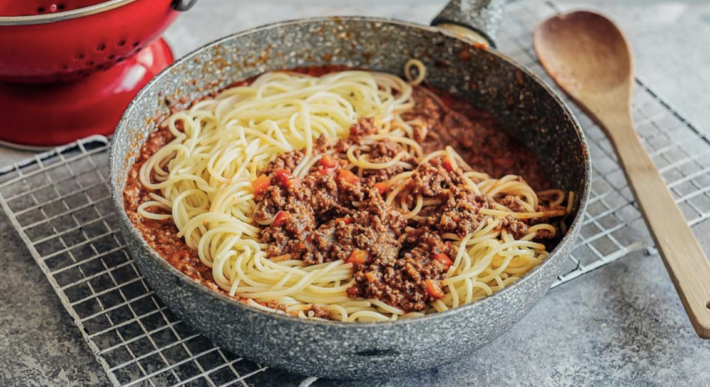

| # | Ingredient name | Amount |
|---|---|---|
| 1 | Onion | 1 |
| 2 | Garlic | 2 pieces |
| 3 | Oil | 2 table spooond |
| 4 | Minced meat | 600g |
| 5 | Bolgar pepper | 2 |
| 6 | Chopped tomatoes | 500gr |
| 7 | Spaghetti | 250gr |
| 8 | Cheese | 100gr |
| 9 | Species(optional) | to taste |
Pill onion and garlic. Dice onion, crush the garlic cloves with the flat side of a knife and chop.
Pour olive oil into a large frying pan and heat it. Put the chopped onion and garlic and, stirring, fry over medium heat until lightly browned.
Add the minced meat to the onion and garlic and, stirring with a fork (so that lumps do not form), fry over medium heat for 10 minutes. The meat base for the bolognese sauce is ready.
Sweet pepper, after removing the seeds and partitions, cut into small cubes. Add the meat to the pan and stir-fry for 5 minutes. Make sure that the pepper won't burn.
Peel the tomatoes and put them in a blender bowl. Chop at high speed, then add to the pan with meat and vegetables. If you don't have blender, you can add them chopped r just buy ready-made sause. Add salt and pepper. Add the herbs to taste and simmer the bolognese sauce over low heat for 20 minutes.
Cook spaghetti. Add some sault into the pot. Add water and boil it. Add spaghetti, if they are too long to suit the pot, crash them into halves. Cook for 10 minutes.
Put the finished spaghetti in a colander and let the liquid drain.
Add spaghetti to the pan with bolognese souce. Mix them. When serving, sprinkle with grated cheese.
